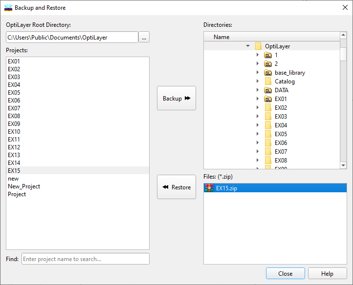

Problem directory backup
Problem Directory Backup (DS Mode)
Note:

The Problem Directory Backup option is not necessary in Single File Mode and is therefore not visible. In Single File Mode, it is important to keep a backup of the project file for data security and integrity purposes.
It is often convenient to store problem directory data for future use, transfer to another computer, or for backup on a floppy disk. OptiLayer allows users to create an archived backup copy of any problem directory. Once created, an archive can be used to restore saved data at any time.

To make a backup of a problem directory in OptiLayer, follow these steps:
Select the project in the list box labeled “Projects”
Choose the destination disk drive and directory where the backup file will be created in the “Directories” list box on the right of the dialog window. OptiLayer will generate a backup file with the name of the project and a “.zip” extension.
Press the “Backup” button to complete the backup process.
To restore previously saved data, select the appropriate drive and directory in the “Files: (*.zip)” frame. All archive (“.zip”) files are listed at the bottom of the frame. Choose the file you wish to restore.
Press the “Restore” button to restore the problem directory.